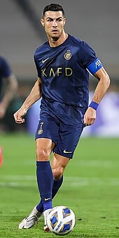

Explore the Career of Cristiano Ronaldo
Cristiano Ronaldo, a football legend, has mesmerized fans around the world with his incredible talent and achievements.
From his early days at Sporting Lisbon to his record-breaking stints at Manchester United, Real Madrid, and Juventus, Ronaldo's journey is nothing short of extraordinary.
Some of the highlights of Cristiano Ronaldo's career include:
- Multiple FIFA Ballon d'Or awards, recognizing him as the best player in the world
- Champion League titles with both Manchester United and Real Madrid
- Record-breaking goal-scoring feats in various leagues
- Representing his national team, Portugal, in numerous international tournaments
Join us as we delve into the life and career of this football icon, Cristiano Ronaldo.